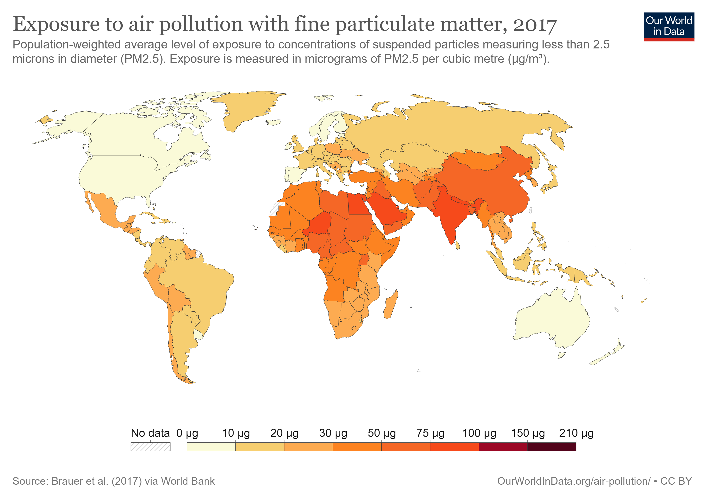

Another aspect of SDG 11, Indicator 6 is air pollution.
Solutions that have been proposed include promoting clean energy sources, implementing emission standards for vehicles and industries,
and developing green infrastructure such as parks and trees. Many countries, NGOs, and companies around the world have taken steps towards reducing air pollution.
For example, China has implemented a national air pollution control plan, and the World Health Organization works to promote clean energy policies.
Companies such as Tesla and BYD have developed electric vehicles to reduce emissions.
It is essential to continue efforts to reduce air pollution to improve the health and well-being of urban populations and mitigate the negative environmental impact of cities.
